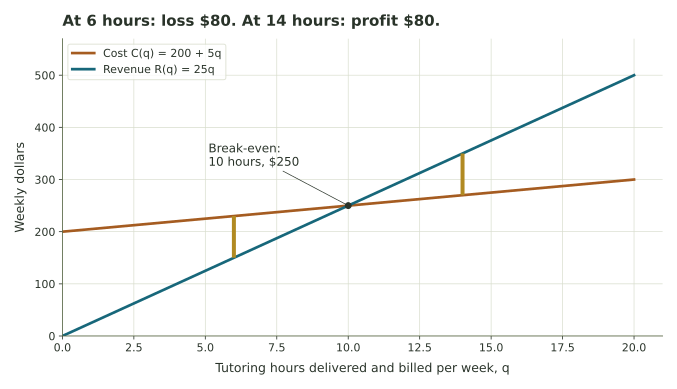

Cost, revenue, profit—and what they tell us.
Translate a story into functions, interpret losses and thresholds, and connect a profit change to one more sale.
Getting started
Each situation gives a fixed cost, cost per unit, and selling price. Assume all units produced are sold.
Build cost, revenue, and profit functions from each situation. The explorer can check your calculations.
Enter dollar amounts without a dollar sign. Negative profit represents a loss. Answers save automatically.
A print shop’s weekly costs and sales
A print shop has $300 of fixed weekly cost. Printing each poster costs $7, and each poster sells for $15. Let q be posters made and sold this week.
Craft-fair greeting cards
A student pays a $48 table fee. Each card costs $1.50 to make and sells for $6. Let q be cards made and sold at the fair. Build C, R, and P before calculating the threshold.
From a loss to a positive profit
For the craft-fair model \(P(q)=4.5q-48\), find when the seller stops losing money.
What does one additional unit contribute?
Return to the print shop in Part 1. What does selling one more poster add to cost, revenue, and profit?
Now compare two different businesses over one month. Both have fixed cost $600. A has a margin of $10 per item and B a margin of $15 per item. Thus \(P_A(q)=10q-600\) and \(P_B(q)=15q-600\). Assume both can make and sell the quantities being compared.
A tutoring service’s weekly model
A tutoring service has C(q)=200+5q and R(q)=25q, where q is hours delivered and billed in one week. Here fractional hours can be meaningful, unlike fractional greeting cards. The graph compares modeled money amounts at the same number of hours.

Review your work
Check the units, signs, and distinction between a threshold and an optimum. Your progress count tracks the five numerical sections. Written explanations also save and print, but are not automatically marked correct. Add your name below and print or save your completed work for submission as directed by your instructor.